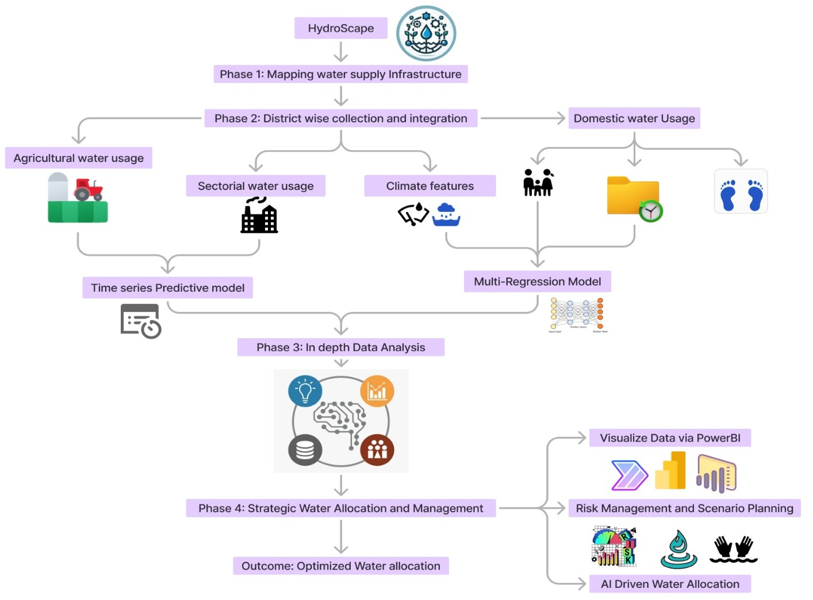

Problem Statement ID: SIH1692
Problem Statement Title: Forecasting Future Water Requirements and Assessing Storage Capacities in Reservoirs
Theme: Smart Education
PS Category: Software
Team Name: Drip-outs
The technical stack involves a range of tools and technologies designed to analyze, forecast, and manage water resources effectively:
This stack supports the processing and analysis of water-related data to predict demand and optimize water management strategies. The flowchart (shown below) further details the process flow, outlining each stage from data collection to reporting.
Water Supply Mapping: The project identifies connections between dams and districts, analyzing their storage capacities and how they cater to different regions.
Water Usage Analysis: This step evaluates the water demands of various sectors, including agriculture, industry, domestic consumption, and ecological needs. Accurate data on these demands is critical for balancing resource distribution.
Water Demand & Sectoral Analysis: The team calculates water demand by sector, particularly focusing on irrigation and consumption patterns. This analysis ensures that water allocation is optimized for each sector.
Strategic Allocation & Management: Using AI models, the team simulates various scenarios to test different water management strategies. The results are visualized using Power BI to support informed decision-making.
Analysis of Feasibility: The project is highly adaptable and can be applied across various sectors and needs. Historical data on dams and water usage is essential for accurate modeling, making this a critical factor for feasibility.
Potential Challenges and Risks: The team identifies two main challenges: adapting to evolving water usage patterns and integrating indigenous knowledge with modern predictive models.
Strategies for Overcoming Challenges: The team plans to use Geo-Ethnographic Data Fusion, which combines geographic and cultural data for better water resource management. They will also continuously update models with new data and insights to stay relevant.
Potential Impact on Target Audience: The project ensures equitable water distribution and helps prevent shortages. It also supports long-term water management planning and risk mitigation, benefiting both policymakers and communities.
Benefits of the Solution: In addition to practical benefits, the project emphasizes the preservation of cultural and environmental values. By integrating cultural practices with modern water management techniques, the solution promotes a holistic approach to sustainability.
This section contains relevant references and research links used in developing the project. Research was conducted on the applications of the problem statements and the target group that is focused on the proposed solution.
References:
India Water Resources Information System (India WRIS): https://indiawris.gov.in/wris/#/
Petri, B. Yuce, A. Kwan, and Y. Rezgui, "An Intelligent Analytics System for Real-Time Catchment Regulation and Water Management," in IEEE Transactions on Industrial Informatics, vol. 14, no. 9, pp. 3970-3981, Sept. 2018, doi: 10.1109/TII.2017.2782338
P. Ai, C. Xiong, K. Li, Y. Song, S. Gong, and Z. Yue, "Effect of Data Characteristics Inconsistency on Medium and Long-Term Runoff Forecasting by Machine Learning," in IEEE Access, vol. 11, pp. 11601-11612, 2023, doi: 10.1109/ACCESS.2023.3241995.